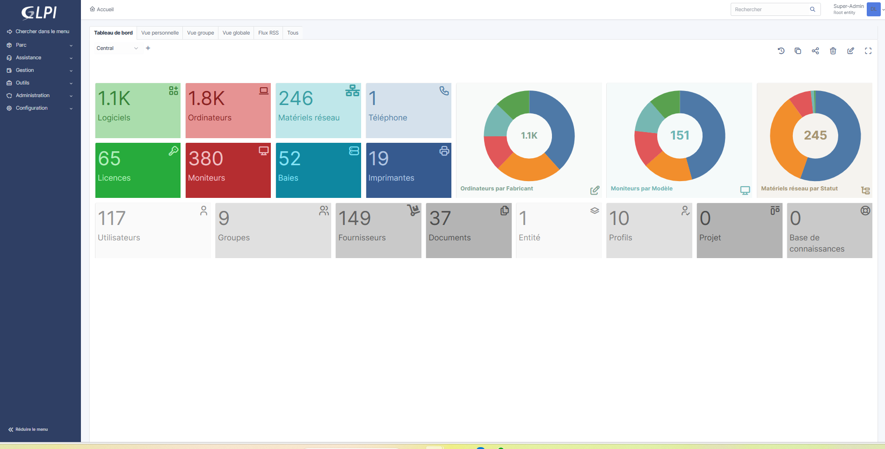

Inventaire du parc avec GLPI
C1 — Recensement et identification des ressources numériques
Mise en place de GLPI afin de centraliser et automatiser l’inventaire des ressources informatiques : ordinateurs, imprimantes, matériels réseau, utilisateurs et groupes.
Contexte
Dans le cadre de la gestion du parc informatique, il est nécessaire de centraliser les informations concernant les équipements. GLPI est une solution open-source permettant l’inventaire automatique et la gestion des ressources numériques.
Objectif
L’objectif était de mettre en place une solution capable de recenser automatiquement les ressources numériques et de regrouper les informations du parc dans une interface unique.
Environnement technique
Installation et configuration
Mise à jour du système
sudo apt update && sudo apt upgrade -yInstallation des dépendances
sudo apt install apache2 mariadb-server php php-mysql \
php-xml php-mbstring php-curl php-gd php-intl \
php-zip php-bz2 php-imap unzip -ySécurisation MariaDB
sudo mysql_secure_installationCréation de la base de données
CREATE DATABASE glpi;
CREATE USER 'glpiuser'@'localhost'
IDENTIFIED BY 'motdepasse';
GRANT ALL PRIVILEGES ON glpi.*
TO 'glpiuser'@'localhost';
FLUSH PRIVILEGES;Téléchargement de GLPI
wget https://github.com/glpi-project/glpi/releases/download/10.0.11/glpi-10.0.11.tgzExtraction et permissions
tar -xvzf glpi-10.0.11.tgz
chown -R www-data:www-data /var/www/html/glpiRésultat obtenu
Centralisation du parc
Après l’installation, GLPI permet d’obtenir une vision globale du parc informatique depuis un tableau de bord centralisé.
- Inventaire automatique des machines
- Suivi des ordinateurs et imprimantes
- Gestion des utilisateurs et groupes
- Centralisation des ressources numériques
Capture de l’interface GLPI

Tableau de bord principal de GLPI après installation et configuration.
Compétences mobilisées
- Recenser et identifier les ressources numériques
- Installer et configurer un service web sous Linux
- Configurer une base de données MariaDB
- Mettre en place un outil de gestion de parc informatique
- Structurer les informations d’un parc informatique